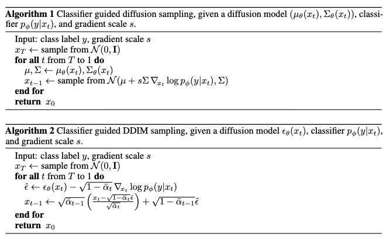

Notes on diffusion model (II) -- Conditional Generation
Latent diffusion, classifer-guided and classifier-free diffusion
Introduction
In previous discussion, we have shown power of pixel-based idiffusion models on a variety of dataset and tasks such as image synthesis and sampling. These models achieved state-of-the-art synthesis quality. In this post, we are going to discuss some recent works on conditional generation which means guide the generation process with additional conditions. A naive solution is to train a diffusion model specific on certain dataset and generate samples with it. However, more commonly, we want to generate samples conditioned on class labels or a piece of descriptive text. Building on this, an more sophisticated method is add label \(y\) into input and, therefore, the diffusion process will take class information into consideration. However, due to performance reason, there are multiple algorithm have been proposed to achieve higher generation quality.
Classifier Guided Diffusion
In order to explicit utilize class label information to guide the diffusion process,
There are three important components in this approach: classifier training, incorporate label information into diffusion model training and classifier-guided sample generation.
- Classifier training: A classifier \(p(y\mid x)\) can be exploited to improve a diffusion generator by providing gradient \(\nabla_x p(y\mid x)\) to the sampling process. Since the generated images at intermediate steps are noisy, the trained classifier should be able to adapt to these noises. Therefore, the classifier \(p_\phi(y\mid x_t, t)\) is trained on noisy images \(x_t\) and then use gradients \(\nabla_{x_t}\log p_\phi(y|x_t, t)\) to guide the diffusion sampling process towards an arbitrary class label y.
- Adaptive group normalization: The paper incorporated adaptive group normalization layer \(\mathrm{AdaGN}(h,y)=y_s\mathrm{GroupNorm}(h)+y_b\) into the neural network, where \(h\) is the output of previous hidden layer and \(y=[y_s, y_b]\) is obtained from a linear projection of the timestep and class embedding.
- Conditional reverse noising process: The paper
proved that the reverse transition distribution can be written in the form as \(p_{\theta, \phi}\left(x_t \mid x_{t+1}, y\right)=Z p_\theta\left(x_t \mid x_{t+1}\right) p_\phi\left(y \mid x_t\right)\).
This can be observed from the following relationship: \(\begin{align} q(x_t\mid x_{t+1}, y)=&\frac{q(x_t,x_{t+1}, y)}{q(x_{t+1},y)}\nonumber\\ =&q(y\mid x_t, x_{t+1})\frac{q(x_t, x_{t+1})}{q(x_{t+1}, y)}\nonumber\\ =&\left(\frac{q(x_{t+1}\mid x_t, y)q(x_t, y)}{q(x_t,x_{t+1})}\right)\frac{q(x_t\mid x_{t+1})}{q(y\mid x_{t+1})}\nonumber\\ =&\left(\frac{q(x_{t+1}\mid x_t)q(y\mid x_t)}{q(x_{t+1}\mid x_t)}\right)\frac{q(x_t\mid x_{t+1})}{q(y\mid x_{t+1})}\nonumber\\ =&\frac{q(x_t\mid x_{t+1})q(y\mid x_t)}{q(y\mid x_{t+1})}, \end{align}\) where \(q(y\mid x_{t+1})\) can be viewed as a constant since it does not contain \(x_t\).
We can write the reverse process(step 3) in DDIM’s language. Recall that \(\nabla_{x_t}\log p_\theta(x_t)=-\frac{1}{\sqrt{1-\bar{\alpha}_t}}\epsilon_\theta(x_t, t)\) and we can write the score function for the joint distribution of \((x_t, y)\) as follows,
\[\begin{aligned} \nabla_{\mathbf{x}_t} \log q\left(\mathbf{x}_t, y\right) & =\nabla_{\mathbf{x}_t} \log q\left(\mathbf{x}_t\right)+\nabla_{\mathbf{x}_t} \log q\left(y \mid \mathbf{x}_t\right) \\ & \approx-\frac{1}{\sqrt{1-\bar{\alpha}_t}} \epsilon_\theta\left(\mathbf{x}_t, t\right)+\nabla_{\mathbf{x}_t} \log p_\phi\left(y \mid \mathbf{x}_t\right) \\ & =-\frac{1}{\sqrt{1-\bar{\alpha}_t}}\left(\boldsymbol{\epsilon}_\theta\left(\mathbf{x}_t, t\right)-\sqrt{1-\bar{\alpha}_t} \nabla_{\mathbf{x}_t} \log p_\phi\left(y \mid \mathbf{x}_t\right)\right). \end{aligned}\]Therefore, we obtained the new noise prediction \(\hat{\epsilon}(x_t)\) as
\[\begin{equation} \hat{\epsilon}(x_t):=\epsilon_\theta(x_t)-\sqrt{1-\bar{\alpha}_t}\nabla_{x_t}\log p_\phi(y\mid x_t). \end{equation}\]The paper provided detailed algorithms based on DDPM and DDIM.

Classifier-Free Guidance Diffusion model
Since training an independent classifier \(p_\phi(y\mid x)\) involved extra effort,
- Replace the previously trained classifier with the implicit classifier according to Bayesian Rule.
- Use a single neural network to function as two noise generators– a conditional one and a unconditional one. It can be done by let \(\epsilon_\theta(x_t, t)=\epsilon_\theta(x_t, t, y=\varnothing)\) for unconditional generation and \(\epsilon_\theta(x_t, t, y)\) for conditional generation towards class label \(y\). Therefore, the new noise generation function can be deduced as follows,
Latent Diffusion Models
Operating on pixel space is exceptional costful. For algorithms like diffusion models, it is even more demanding, since the recursive updates amplified this cost. A common solution in ML to deal with high dimensionality is embedding data into lower dimensional latent space. It is observed in

Methods
The perception compression process is depended on an autoencoder model. And encoder \(\mathcal{E}\) encodes an image \(x\in\mathbb{R}^{H\times W\times 3}\) in RGB space into a latent representation \(z=\mathbb{E}(x)\), and an decoder \(\mathcal{D}\) reconstructs the image from its latent \(\tilde{x}=\mathcal{D}(z)=\mathcal{D}(\mathcal{E}(x))\). In contrary to other previous work
- KL-reg: A small KL penalty towards a standard normal.
- VQ-reg: Uses a vector quantization layer within the decoder, like VQVAE but the quantization layer absorbed by the decoder.
The semantic compression stage happens in the latent space. After the autoencoder, the paper construct a diffusion model in latent space with U-Net being the backbone neural network. Denote the backbone neural network as \(\epsilon_\theta(\circ, t)\) and the loss function is
\[\begin{equation}\label{eq:LDM-loss} L_{L D M}:=\mathbb{E}_{\mathcal{E}(x), \epsilon \sim \mathcal{N}(0,1), t}\left[\left\|\epsilon-\epsilon_\theta\left(z_t, t\right)\right\|_2^2\right]. \end{equation}\]As in many other generative models and the topic of this blog, conditional mechanisms can be applied to this framework and, to be more specific, in the latent space. The paper implemented this by adding the additional inputs \(y\) to the denoising autoencoder as \(\epsilon_\theta\left(z_t, t, y\right)\). The additional inputs \(y\) can be text, semantics maps or other “embedible information” like images and it aims to controll the synthesis process.
-
Due to the various modalities of the inputs, the paper first project the inputs \(y\) to an “intermediate representation”(embedding) \(\tau_\theta(y)\in\mathbb{R}^{M\times d_\tau}\).
-
Cross-attention layer is used to apply controlling signal \(\tau_\theta(y)\) to the diffusion process through U-Net backbone. To be more specific, \(\mathrm{Attention}(Q, K, V)=\mathrm{softmax}\left(\frac{QK^T}{\sqrt{d}}\right)\), with
Based on image-conditioning pairs, we then learn the conditional LDM via the loss
\[L_\mathrm{LDM}:=\mathbb{E}_{\mathcal{E}(x), y, \epsilon \sim \mathcal{N}(0,1), t}\left[\left\|\epsilon-\epsilon_\theta\left(z_t, t, \tau_\theta(y)\right)\right\|_2^2\right].\]
Experiments
The paper examine the model performance in two aspects:
- Enerated samples’ perceptual quality and training efficiency
- Sampling efficiency
Perceptual Compression Tradeoffs

In this experiment, the paper compared FID/Inception scores under different downsample rate at different training steps. The experiment observed that LDM, with proper downsample rate, achieved siginificant better FID scores comparing with pixel-based diffusion model.

Sampling Efficiency

The LDM also demonstrated better sampling efficiency. Moreover, it generates samples faster and at a higher quality.